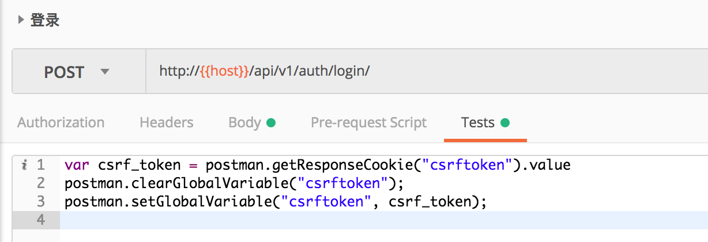
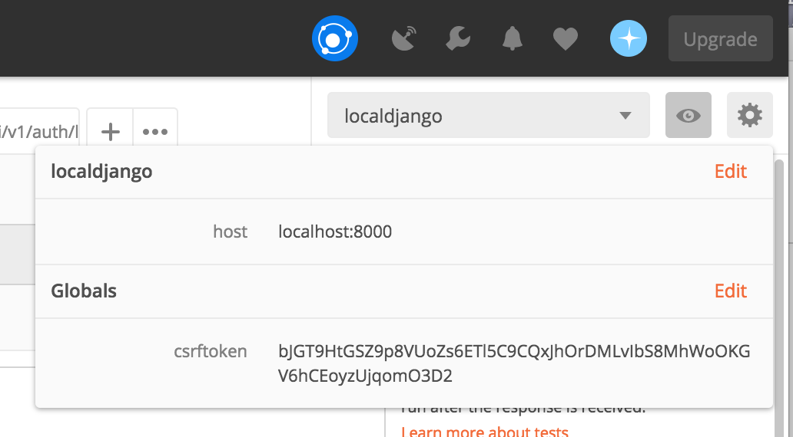
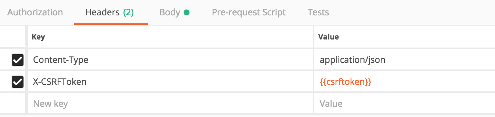
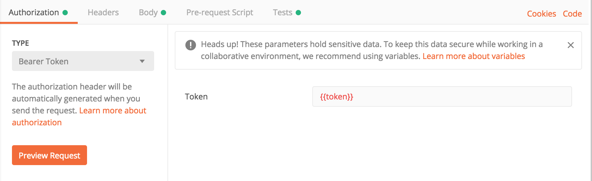

近期在开发一个Django的项目，由于开启了csrf防护，所以需要在请求的header中加入“X-CSRFToken”。使用postman进行请求的测试时，如果不加这个header，则会返回403错误。
Django项目的csrftoken一般在登录的时候会设置到cookie中，本文描述了如何使用postman自动获取cookie中的csrftoken，并将该值自动设置到后续请求的header中。
为了自动化地设置这个token，我们需要使用postman的“Tests”功能。Postman的“Tests”功能支持使用JS进行一些变量操作。我们可以在登录接口的请求中填入如下的Tests脚本：
1 | var csrf_token = postman.getResponseCookie("csrftoken").value |
脚本编写后内容入下图所示：

该脚本将登录后设置的csrftoken这个cookie的值获取到，并设置为一个postman的全局环境变量(csrftoken)，此时点击postman界面右上角眼睛一样的图标可以直接查看到这个全局的变量：

此时可以在后续的请求中设置“X-CSRFToken”这个header，值就是刚才设置好的全局变量，使用“”即可完成引用：

此后每次重新登录，该变量值就会重新进行设置，使得系统API的自动化测试可以顺利进行。
在实际开发中，我们有时候还会使用token进行认证，认证用的token也可以通过类似的方式来进行设置，只是获取token的方式是从返回的json中来获取，下图是一个设置认证头的示例，：
1 | var token = JSON.parse(responseBody).token; |
界面设置效果如下：
